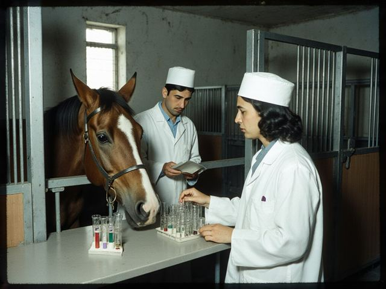

Home › Veterinary
Livestock and veterinary notices

Veterinary control in the ISEZ is carried out by the State Veterinary Inspectorate of the Talas Basin Agricultural Directorate and the district veterinary stations under Veterinary Control Regulation No. 77 (1998). Laboratory tests are made at the Talas Veterinary Research Center and the Nurzhan Interdistrict Veterinary Laboratory.
Chief State Veterinary Inspector: Dr G. Kenesheva. Report sick or dead animals to the district station at once.
Notices
28.10.2026 Kurban Ait slaughter points: list for 2027 to be published in April. Until then, slaughter for sale only at licensed points with a veterinary stamp on the carcass.
21.10.2026 Animals coming down from summer pastures across the Qara-Chik line are admitted only at the designated crossings, with Form 2-VET and a clan council certificate of origin. Vaccination on arrival is free.
12.10.2026 Rabies quarantine in Kök-Oi (Talas District), declared 14.09.2026, is lifted. Dogs not vaccinated this year must be vaccinated by 31 December.
05.10.2026 Ear tags for cattle and sheep: 2027 tags (yellow) are issued free at the district veterinary stations from 1 December. Untagged animals cannot get Form 1-VET.
15.09.2026 The autumn vaccination round has begun. Veterinary feldshers visit villages by the schedule of the district station; keep animals at home on the day of the visit.
01.09.2026 Order No. 133 of 01.09.2026: veterinary measures for autumn and winter 2026-2027.
02.07.2026 Brucellosis: boil milk; buy dairy products only where they have passed veterinary control. Abortions in cows, ewes and goats must be reported to the district veterinary station.
20.05.2026 Horse sales: Akyel and Chongtor horses for export need DNA parentage from the studbook and Form 2-VET. The Inspectorate does not issue export certificates for other countries.
02.03.2026 Spring vaccination round 01.03-30.04.2026 (anthrax, foot-and-mouth disease, emphysematous carbuncle).
Autumn vaccination round 2026 (Order No. 133 of 01.09.2026)
| Disease | Animals | Where | Dates | Cost to owner |
|---|---|---|---|---|
| Anthrax | cattle, sheep, goats, horses | all districts | 15.09-30.11.2026 | free |
| Foot-and-mouth disease | cattle, sheep, goats | all districts; first in Kara-Buura and Chu (border) | 15.09-15.11.2026 | free |
| Brucellosis (vaccine Rev-1) | ewes and doe kids 3-8 months | Talas, Kara-Buura, Sary-Bulak | 01.10-30.11.2026 | free |
| Brucellosis test (blood) | cattle over 12 months, sheep and goats before sale | all districts | all year | free; 12 som per head for sale certificates |
| Rabies | dogs, cats | cities and district centres | 01.10-31.12.2026 | free at the district veterinary station; 40 som at home |
| Sheep pox | sheep | Sary-Bulak, Kara-Buura (hill pastures) | after return from summer pasture | free |
| Deworming | sheep, goats | all districts | after return from summer pasture | 25 som per head |
Moving and selling animals
- Form 1-VET: veterinary certificate for moving animals or products inside the ISEZ (to a bazaar, a slaughter point, another district). Issued by the district station on the day, for tagged and vaccinated animals.
- Form 2-VET: certificate for consignments across the Qara-Chik line and for export. Issued by the State Veterinary Inspectorate, Jibek Jolu Avenue 41, 2nd floor, room 214. Fees are paid in cash, in som, at the cash desk of the old Directorate building, Tokmok Street 3 (entrance from the yard).
- Animals from summer pastures beyond the line enter only at the designated crossings, with Form 2-VET and a certificate of origin of the clan council.
- Commercial slaughter of horses and sale of horsemeat are prohibited (Horse Slaughter Prohibition Act № 96-22).
- The Inspectorate does not issue certificates recognised by other countries. Exporters arrange certificates of the country of destination themselves.
District veterinary stations
| Station | Address | Telephone |
|---|---|---|
| Talas City Veterinary Station | Talas, Tokmok Street 3 | +996-39-2-24-62-10 |
| Talas District Veterinary Station | Kara-Oi | +996-39-2-55-40-12 |
| Kara-Buura District Veterinary Station | Kyzyl-Adyr | +996-39-2-53-11-08 |
| Chu District Veterinary Station | Besh-Terek | +996-39-3-48-20-17 |
| Nurzhan City Veterinary Station | Nurzhan, Dastgoh District | +996-39-3-44-18-21 |
| Sary-Bulak District Veterinary Station | Sary-Bulak | +996-39-2-56-10-35 |
| Lower Naryn District Veterinary Station | Tash-Kömür | +996-39-2-57-14-02 |
| Toktogul District Veterinary Station | Toktogul | +996-39-2-58-12-40 |
Stations work Mon-Fri 8:00-17:00, Sat 8:00-13:00. In the vaccination round feldshers work in the villages from 7:00.